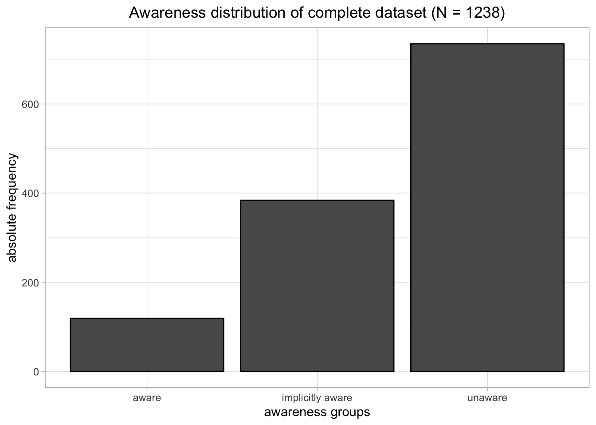
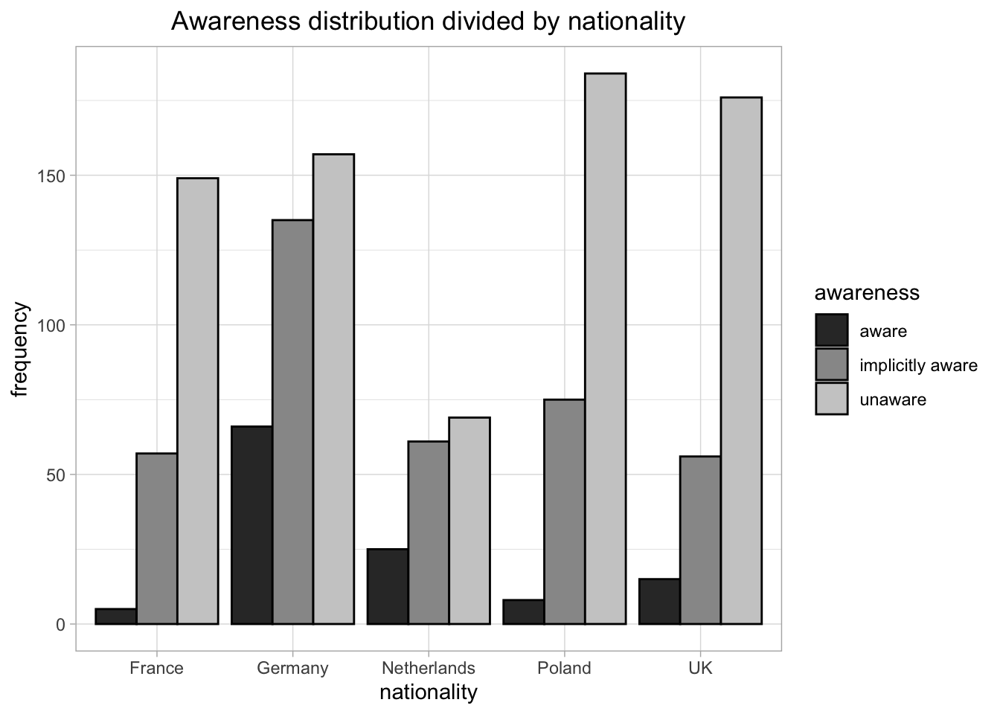

First, we do some basic descriptive analysis of our data.
The sample consisted of a total of 1238 respondents from 5 different countries.
dat %>% select(nationality, gender, age, education, facebook) %>%
tbl_summary(by = nationality) %>%
add_n() %>%
bold_labels()| Characteristic | N | France, N = 2111 | Germany, N = 3581 | Netherlands, N = 1551 | Poland, N = 2671 | UK, N = 2471 |
|---|---|---|---|---|---|---|
| gender | 1,238 | |||||
| female | 115 (55%) | 184 (51%) | 56 (36%) | 132 (49%) | 124 (50%) | |
| male | 96 (45%) | 174 (49%) | 99 (64%) | 135 (51%) | 123 (50%) | |
| age | 1,238 | 42 (30, 50) | 37 (27, 49) | 45 (26, 54) | 38 (30, 49) | 41 (30, 53) |
| education | 1,238 | |||||
| high | 114 (54%) | 137 (38%) | 121 (78%) | 119 (45%) | 120 (49%) | |
| low | 97 (46%) | 221 (62%) | 34 (22%) | 148 (55%) | 127 (51%) | |
| 1,238 | 209 (99%) | 339 (95%) | 119 (77%) | 266 (100%) | 245 (99%) | |
|
1
n (%); Median (IQR)
|
||||||
model <- chisq.test(as.factor(dat$nationality), y = as.factor(dat$awareness))
model %>% summary()## Length Class Mode
## statistic 1 -none- numeric
## parameter 1 -none- numeric
## p.value 1 -none- numeric
## method 1 -none- character
## data.name 1 -none- character
## observed 15 table numeric
## expected 15 -none- numeric
## residuals 15 table numeric
## stdres 15 table numericdat %>%
ggplot() +
aes(x = awareness) +
geom_bar(position = "dodge",
colour = "black") +
scale_fill_grey() +
labs(title = "Awareness distribution of complete dataset (N = 1238)",
x = "awareness groups",
y = "absolute frequency") +
theme_light() +
theme(plot.title = element_text(hjust = 0.5))
dat %>% ggplot() +
aes(x = nationality,
fill = awareness) +
geom_bar(position = "dodge",
colour = "black") +
scale_fill_grey() +
labs(title = "Awareness distribution divided by nationality",
x = "nationality",
y = "frequency") +
theme_light() +
theme(plot.title = element_text(hjust = 0.5)) The awareness of the participants from different countries differs significantly (\(\chi^2\)(8, N = 1238) = 113.50, p < .001, V = .21). However, the figure shows that for all countries, most participants were unaware and the least were aware. The differences between the amount of implicitly aware participants and unaware participants were small for the Netherlands and Germany. Moreover, Germany had a relatively large amount of aware participants and France had the least aware participants.